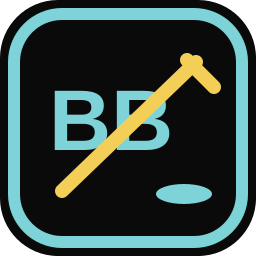

Preload before practice
Cache the current plan, drill data, diagrams, roster, lineup, and app shell while you still have reliable service.

BenchBossCoach HQOffline-first rink workflow
Bench Mode preloads your practice, animations, roster, and app shell before you step on the ice. Coaches get high contrast, giant controls, one-tap drill swaps, quick notes, and a recap that can be published after practice.
Why it matters
Cache the current plan, drill data, diagrams, roster, lineup, and app shell while you still have reliable service.
Swap drills instantly for half ice, no goalies, low numbers, station work, or a simpler progression.
Save notes during practice, then publish a clean recap to the parent portal when you are back online.